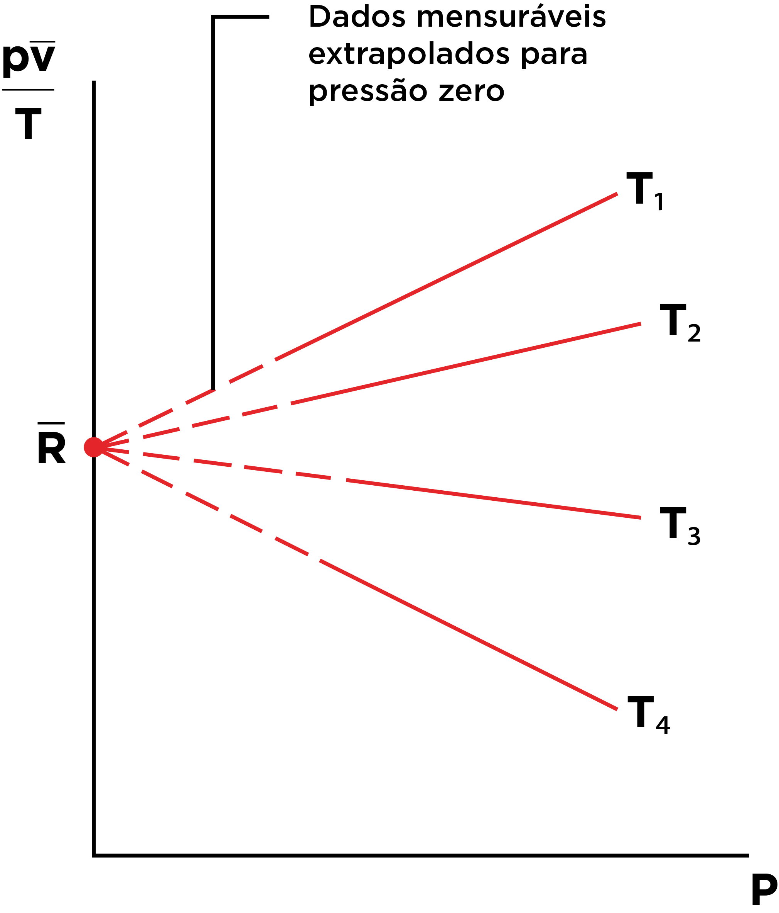

Características do ar e leis dos gases
Nesta aula, os seguintes tópicos serão explorados:
tópico
Tópico 1: Propriedades físicas do ar comprimido
tópico
Tópico 2: Lei dos gases ideais e transformações gasosas
tópico
Tópico 3: Ar como gás real: compressibilidade e fator Z
Propriedades físicas do ar comprimido
Olá, estudante! Antes de entrarmos nas leis dos gases, precisamos “conhecer melhor” o personagem principal da pneumática: o ar comprimido.
Ele parece simples (incolor, insípido e inodoro), mas quando passa por um compressor ele muda de comportamento, carrega impurezas e exige controle técnico para não virar dor de cabeça em forma de falhas, corrosão e perda de eficiência.
Pensa comigo: por que duas linhas pneumáticas com a mesma pressão no manômetro podem ter desempenhos tão diferentes? A resposta quase sempre está nas propriedades do ar e na forma como ele foi gerado, tratado e distribuído. E é sobre isso que vamos estudar agora, vamos lá?
O que é o ar, afinal?
O ar atmosférico é uma mistura de gases. De acordo com Rollins (2004) e Filho e Santos (2018), em condições “médias” (sem considerar vapor d’água), o ar seco costuma-se apresentar a composição aproximada como:
Só que, no mundo real, o ar quase nunca está realmente “seco”: ele carrega umidade, e essa umidade varia com o clima, a temperatura e o ambiente industrial (indústria alimentícia, metalmecânica, madeireira… cada uma “contamina” o ar de um jeito). Essa variabilidade é um dos motivos pelos quais o tratamento de ar é um tema central na pneumática.
Além disso, o ar tem propriedades que o influenciam, logo, também afetam o processo, como Pressão, Temperatura, Umidade, Densidade e Vazão (Daines; Daines, 2018).
Pressão: o “termômetro” do esforço
Quando falamos em pneumática, a pressão aparece o tempo todo. Mas, segundo Prudente (2015), é importante separar os três conceitos:
- Pressão atmosférica é a pressão do ar ao nosso redor.
- Pressão manométrica (ou relativa) é a medida marcada no manômetro (comparando com a atmosférica).
- Pressão absoluta é a pressão “real” do gás, somando pressão atmosférica + manométrica.
Pausa rápida
Você já viu alguém calcular “ar comprimido” usando a pressão do manômetro como se fosse absoluta? Esse detalhe sozinho pode gerar erro grande em cálculos e dimensionamentos.

Além disso, vale lembrar a relação básica entre força, pressão e área (muito usada para compreender atuadores), pois a pressão está ligada à força por unidade de área, como ilustra a Figura 1.
Temperatura: compressão aquece, expansão esfria
Ao ser comprimido, o ar tende a aquecer (isso é percebido na saída de compressores e em tubulações próximas). E, quando ele se expande rapidamente, pode resfriar.
Por que isso importa? Pois, segundo Prudente (2015) e Fialho (2011):
Esse comportamento aparece diretamente quando estudamos processos (isotérmico, adiabático etc.) nas leis dos gases que serão discutidos no tópico posterior.
Umidade: o “inimigo silencioso” do ar comprimido
Fialho (2011) explica sobre o tratamento de ar e afirma que se o ar entra no compressor úmido, ele sai com potencial de virar água em algum ponto do sistema, porque durante a compressão, parte do vapor pode se manter, e ao resfriar depois (pós-resfriador, tubulação longa, ambiente frio), ocorre condensação.
E isso gera impactos típicos no chão de fábrica, como:
Portanto, aqui entra uma habilidade profissional importante: um bom projetista/manutentor de pneumática enxerga água e sujeira como “propriedades do ar” que precisam ser controladas. Mas isso é assunto para outra aula.
Densidade e “quantidade de ar”: o que realmente move o sistema
Em pneumática, não basta pensar “tenho 7 bar”. O que interessa é quanta massa de ar está efetivamente disponível e chegando ao ponto de consumo.
Ar é compressível (diferente do óleo na hidráulica). Isso significa que mudanças de pressão e temperatura alteram o “estoque” de ar por volume do reservatório e alteram a resposta do sistema (White, 2018).
É por isso que, em redes pneumáticas, frequentemente se fala em:
Vazão: quem manda na velocidade e no tempo de ciclo
Além da pressão, outro conceito importante na pneumática é o de vazão como o “fluxo” de ar ao longo do tempo. Na prática, vazão é o que vai aparecer quando:
Em termos simples, de acordo com White (2018):
- Pressão se relaciona com capacidade de força.
- Vazão se relaciona com velocidade de atuação e tempo de ciclo.
Conclusão do tópico
Agora que você já tem uma base sólida e sabe que o ar comprimido não é “só ar”. Ele é um fluido compressível, influenciado por pressão, temperatura, umidade, densidade e vazão, e essas variáveis definem o comportamento do sistema pneumático no mundo real.
No próximo tópico, vamos pegar essas variáveis e colocar ordem nelas por meio das leis dos gases e aí sim você vai conseguir fazer cálculos e previsões com mais segurança (incluindo o uso da lei dos gases ideais aplicado à pneumática).
Em uma indústria, duas linhas pneumáticas operam com a mesma pressão indicada no manômetro. No entanto, uma delas apresenta menor velocidade de atuação dos cilindros e falhas frequentes em válvulas, enquanto a outra opera normalmente. Considerando os conceitos estudados sobre as propriedades do ar comprimido, qual alternativa melhor explica essa diferença de desempenho?
- As propriedades do ar comprimido, como umidade, temperatura, densidade e vazão, bem como a forma como o ar é gerado, tratado e distribuído, influenciam diretamente o desempenho do sistema.
- A pressão indicada no manômetro garante o mesmo desempenho, não sendo influenciada por fatores como temperatura, umidade ou vazão.
- A diferença ocorre exclusivamente devido ao tipo de atuador utilizado, independentemente das propriedades do ar.
- A pneumática não sofre influência de fatores ambientais, pois o ar é sempre considerado seco e ideal.
- O desempenho do sistema pneumático depende apenas da pressão atmosférica local.
A alternativa A é a correta.
Justificativa: Mesmo operando com a mesma pressão manométrica, sistemas pneumáticos podem apresentar desempenhos distintos devido às propriedades do ar comprimido. Variáveis como umidade, temperatura, densidade e vazão, além das condições de geração, tratamento e distribuição do ar, influenciam diretamente a eficiência, a velocidade de atuação e a confiabilidade dos componentes pneumáticos. Ignorar esses fatores pode resultar em falhas, perdas de eficiência e aumento de custos operacionais.

Lei dos gases ideais e transformações gasosas
Estudante, no tópico anterior você conheceu o ar comprimido do ponto de vista físico e prático. Agora, chegou o momento de dar um passo essencial para quem trabalha com pneumática: entender como pressão, volume, temperatura e quantidade de gás se relacionam matematicamente.
Essas relações não surgiram na indústria, elas vêm da física clássica, mas são amplamente aplicadas em compressores, reservatórios, cilindros e redes pneumáticas. Quando você entende essas leis, deixa de “chutar” e prevê o comportamento do ar dentro de um sistema.
Variáveis de estado: a linguagem dos gases
O comportamento de um gás pode ser descrito por um conjunto de grandezas chamadas variáveis de estado. No caso da pneumática, as mais importantes, de acordo com Prudente (2015), são:
- Pressão (\(P\)): relacionada ao esforço que o gás exerce sobre as paredes do recipiente.
- Volume (\(V\)): espaço ocupado pelo gás.
- Temperatura (\(T\)): associada ao nível de agitação molecular.
- Quantidade de matéria (\(n\)): normalmente expressa em número de mols.
Essas variáveis não são independentes. Alterar uma delas, mantendo as outras controladas, provoca mudanças previsíveis no sistema. É justamente essa previsibilidade que possibilita o uso das leis dos gases em aplicações industriais (White, 2018; Rollins, 2004).
As bases experimentais: Boyle-Mariotte e Gay-Lussac
Antes da formulação geral da lei dos gases ideais, alguns comportamentos específicos foram observados experimentalmente.
Segundo Prudente (2015), quando um gás sofre um processo à temperatura constante, observa-se que seu volume diminui à medida que a pressão aumenta. Esse comportamento é descrito pela Lei de Boyle-Mariotte, muito comum em situações onde o ar é comprimido lentamente e consegue trocar calor com o ambiente, como ilustra a Figura 02.

Já quando o volume é mantido constante, mas a temperatura varia, a pressão do gás se altera proporcionalmente. Esse fenômeno é descrito pela Lei de Gay-Lussac, típica de reservatórios rígidos expostos ao aquecimento solar ou a fontes térmicas externas, algo bastante comum em plantas industriais (Godoi; Assunção, 2019). Essa lei ainda descreve a condição de volume constante, onde a pressão e a temperatura variam (Figura 3).

Essas leis ajudam a compreender situações isoladas, mas a pneumática industrial raramente ocorre em condições tão “perfeitas”. Por isso, precisamos de um modelo mais geral.
A lei dos gases ideais: organizando tudo em uma equação
A chamada Lei dos Gases Ideais, também conhecida como equação de Clapeyron, reúne as variáveis fundamentais em uma única expressão:
\[PV = nRT\]
onde \(P\) é a pressão absoluta do gás, \(V\) é o volume ocupado, \(n\) é o número de mols, \(R\) é a constante universal dos gases, que depende das unidades utilizadas, mas normalmente é \(8{,}314\ J/mol \cdot K\) e \(T\) é a temperatura absoluta (em Kelvin).
Moran (2020) explica a constante universal dos gases considerando um gás confinado em um cilindro com pistão móvel, mantido a temperatura constante. Ao deslocar o pistão, o gás passa por diferentes estados de equilíbrio, cada um com valores específicos de pressão e volume (Figura 4).

A pressão (\(P\)) é inversamente proporcional ao volume, pois ao comprimir ar em um cilindro pneumático, o volume ocupado pelo ar diminui à medida que a pressão sobe. Já a temperatura (\(T\)) e a quantidade de matéria (\(n\)) é proporcional ao volume, pois aumentar a temperatura agita as moléculas, expandindo o gás e ocupando mais espaço, o mesmo para a quantidade de matéria, que quanto mais ar, maior o volume ocupado (Daines; Daines, 2018).
A seguir, veja uma explicação visual da aplicação desses conceitos, dedução da fórmula da lei dos gases ideais e da constante universal dos gases:
Esse modelo é uma idealização, mas extremamente útil. Em muitas aplicações pneumáticas, especialmente em pressões moderadas e temperaturas não extremas, o ar se comporta de forma suficientemente próxima a um gás ideal, permitindo cálculos confiáveis de massa, pressão ou volume (White, 2018; Rollins, 2004).
Transformações gasosas e processos reais
Na pneumática, o ar passa raramente por processos “puros”. Compressão, expansão, aquecimento e resfriamento costumam acontecer de forma combinada.
Compressão rápida em compressores tende a se aproximar de um processo adiabático, com aumento significativo de temperatura, o armazenamento em reservatórios pode se aproximar de um processo isovolumétrico e a expansão em válvulas e atuadores altera simultaneamente pressão, volume e temperatura.
Esses aspectos são amplamente discutidos por White (2018) e Netto e Fernández (2017), que reforçam a importância de associar modelos teóricos ao comportamento físico real dos sistemas.
Conclusão do tópico
Apesar de muito útil, a lei dos gases ideais não descreve perfeitamente todos os cenários. À medida que a pressão aumenta ou a temperatura diminui, o comportamento do ar começa a se afastar do modelo ideal.
É justamente nesse ponto que surge a necessidade de compreender o ar como gás real.
Portanto, no próximo tópico, vamos avançar um pouco mais e discutir quando o ar deixa de se comportar como gás ideal, introduzindo o conceito de gás real, compressibilidade e fator Z, fundamentais para análises mais precisas em sistemas pneumáticos modernos.
Durante a análise de um sistema pneumático, um engenheiro precisa prever como o volume de ar em um cilindro irá se comportar quando ocorrerem variações de pressão e temperatura, com quantidade de ar constante. Considerando os conceitos de variáveis de estado, as leis de Boyle-Mariotte, Gay-Lussac e a Lei dos Gases Ideais, qual afirmação está correta?
- A pressão e o volume de um gás são diretamente proporcionais quando a temperatura permanece constante.
- A Lei de Boyle-Mariotte descreve o comportamento de um gás quando a pressão permanece constante e a temperatura varia.
- A Lei dos Gases Ideais relaciona pressão, volume, temperatura e quantidade de matéria, permitindo prever o comportamento do ar comprimido em diversas aplicações pneumáticas.
- Em sistemas pneumáticos, apenas a pressão influencia o comportamento do ar, sendo desnecessário considerar temperatura e quantidade de matéria.
- As leis dos gases só podem ser aplicadas em processos industriais que ocorrem em condições perfeitamente ideais.
A alternativa C é a correta.
Justificativa: A Lei dos Gases Ideais reúne, em uma única equação, as principais variáveis de estado que descrevem o comportamento de um gás: pressão, volume, temperatura e quantidade de matéria. Esse modelo, embora idealizado, é amplamente utilizado na pneumática industrial, pois permite prever o comportamento do ar comprimido em compressores, reservatórios, cilindros e redes pneumáticas, desde que as condições de operação não sejam extremas.
Ar como gás real: compressibilidade e fator Z
Estudante, até aqui utilizamos um modelo extremamente útil: o gás ideal. Ele nos permite compreender e calcular o comportamento do ar em muitas situações da pneumática industrial. No entanto, a prática mostra que nem sempre o ar se comporta exatamente como o modelo prevê. Em determinadas condições de pressão e temperatura, surgem desvios que precisam ser considerados para evitar erros de projeto, desperdício de energia e falhas operacionais.
É nesse contexto que entra o conceito de gás real.
Por que o ar não é sempre um gás ideal?
O modelo de gás ideal parte de algumas simplificações importantes: considera que as moléculas não ocupam volume próprio e que não existem forças de interação entre elas (Moran, 2020). Essas hipóteses funcionam bem quando o gás está sob baixa pressão e alta temperatura.
Entretanto, em sistemas pneumáticos industriais, o ar é frequentemente comprimido a valores que já não podem ser considerados “baixos”. À medida que a pressão aumenta, as moléculas ficam mais próximas, passam a interagir entre si e o volume ocupado por elas deixa de ser desprezível. O resultado é um comportamento diferente daquele previsto pela equação \(PV = nRT\) (White, 2018).
Em termos práticos: quanto maior for a pressão e menor a temperatura, maior o desvio do comportamento ideal.
Compressibilidade: o que muda no mundo real
A compressibilidade é uma medida de quanto o volume de um gás varia quando a pressão se altera. Embora todo gás seja compressível, essa propriedade não se manifesta de forma perfeitamente linear em condições reais.
Segundo Prudente (2015) e Rollins (2004), na pneumática, isso significa que:
O volume de ar armazenado em um reservatório pode ser menor ou maior do que o previsto pelo modelo ideal.
A massa de ar disponível para consumo pode ser superestimada se o comportamento real não for considerado.
Ciclos de atuação podem variar em função da pressão de operação.
Esses efeitos tornam-se mais relevantes em sistemas que trabalham com pressões elevadas, reservatórios grandes ou processos que exigem maior precisão energética (Rollins, 2004).
Fator de compressibilidade (Z): quantificando o desvio
Para medir o quanto um gás real se afasta do comportamento ideal, utiliza-se o fator de compressibilidade, representado por \(Z\). Esse fator corrige o modelo ideal, tornando-o mais próximo da realidade. Valores de \(Z\) são obtidos experimentalmente e apresentados em gráficos e tabelas de dados generalizados de compressibilidade (Figura 5), amplamente utilizados na engenharia (White, 2018; Godoi; Assunção, 2019).

De forma conceitual:
- Quando \(Z = 1\), o gás se comporta como ideal.
- Quando \(Z \neq 1\), existem desvios que precisam ser considerados nos cálculos.
Logo, a equação dos gases pode ser ajustada para:
\[PV = Z \cdot nRT\]
Dados generalizados de compressibilidade
Uma vantagem importante desses dados é que, apesar de cada gás apresentar pequenas diferenças, o comportamento geral é semelhante. Para tornar essa análise mais universal, utilizam-se grandezas adimensionais (Moran, 2020), como Pressão reduzida (\(p_R\)) e Temperatura reduzida (\(T_R\)), que podem ser calculadas por:
\[T_R = \dfrac{T}{T_c}\]
\[p_R = \dfrac{p}{p_c}\]
onde \(T\) é a temperatura do fluído (K), \(T_c\) é a temperatura crítica (K), \(p\) é a pressão do fluído (bar) e \(p_c\) é a pressão crítica (bar).
Essas variáveis permitem representar o comportamento de diferentes gases em um mesmo conjunto de curvas, facilitando a análise e a aplicação prática. Na indústria, esses gráficos são frequentemente usados para verificar se o uso do modelo de gás ideal é aceitável ou se é necessário aplicar correções (White, 2018).
Conexão
Para aprofundar o entendimento sobre gás real e fator de compressibilidade, recomenda-se a consulta aos gráficos e tabelas de dados generalizados apresentados em livros clássicos de mecânica dos fluidos e termodinâmica, como White (2018) e Moran (2020). Muitos fabricantes de compressores também disponibilizam materiais técnicos e softwares que incorporam automaticamente o fator \(Z\) nos cálculos de desempenho.
Impactos práticos nos sistemas pneumáticos
Entender o ar como gás real não é apenas um refinamento teórico. Essa abordagem impacta diretamente:
- Dimensionamento de reservatórios: a quantidade real de ar armazenado pode ser diferente da estimada pelo modelo ideal.
- Eficiência energética: erros de cálculo levam a ciclos mais longos e maior consumo de energia elétrica.
- Controle de processos: sistemas mais sensíveis podem apresentar variações de desempenho se os desvios não forem considerados.
Em aplicações industriais convencionais, muitas vezes o modelo ideal é suficiente. Porém, em sistemas mais exigentes, ignorar o comportamento real do ar pode gerar decisões técnicas equivocadas (Netto; Fernández, 2017).
É isso aí!
Estudante, compreender o ar como gás real é reconhecer que a pneumática industrial opera em um meio físico complexo, onde modelos simplificados ajudam, mas têm limites. O fator de compressibilidade surge como uma ferramenta essencial para ajustar cálculos e aproximar a teoria da realidade.
Com isso, você fecha esta aula entendendo quando o gás ideal é suficiente e quando é necessário ir além, uma habilidade que diferencia quem apenas aplica fórmulas de quem realmente compreende o funcionamento dos sistemas pneumáticos.
Adiante, esse conhecimento será fundamental para avançar no estudo da geração do ar comprimido, onde pressão, temperatura e comportamento real do ar passam a ter papel central no desempenho dos compressores e do sistema como um todo.
Mas antes, ouça esse podcast narrado para reforçar o conteúdo:
Diferenças entre o gás ideal e o gás real
Até a próxima aula!
Durante o projeto de um sistema pneumático que opera em pressões elevadas, um engenheiro percebe que os resultados obtidos com a equação dos gases ideais não representam com precisão o comportamento real do ar no reservatório. Para melhorar a confiabilidade dos cálculos, ele decide considerar o ar como um gás real.
Com base nos conceitos de gás real, compressibilidade e fator de compressibilidade Z, qual alternativa está correta?
- O modelo de gás ideal é sempre válido, independentemente das condições de pressão e temperatura do sistema pneumático.
- O fator de compressibilidade Z é igual a 1 em todas as condições de operação, não sendo necessário em aplicações industriais.
- O uso do fator de compressibilidade elimina a necessidade de conhecer a pressão e a temperatura do sistema.
- A compressibilidade é uma propriedade exclusiva de líquidos, não se aplicando aos gases utilizados na pneumática.
- À medida que a pressão aumenta e a temperatura diminui, o comportamento do ar pode se afastar do modelo ideal, sendo necessário considerar o fator de compressibilidade Z nos cálculos.
A alternativa E é a correta.
Justificativa: O modelo de gás ideal considera simplificações que deixam de ser válidas em condições de pressões elevadas e temperaturas mais baixas, comuns em sistemas pneumáticos industriais. Nessas situações, o ar passa a apresentar comportamento de gás real, tornando necessário o uso do fator de compressibilidade Z para corrigir a equação dos gases e obter resultados mais próximos da realidade, evitando erros de projeto e perda de eficiência energética.
Sua próxima etapa é assistir à videoaula, onde você poderá ver os conceitos em ação e ampliar sua compreensão. Essa é uma ótima oportunidade para reforçar o aprendizado.
Assista a videoaula
DAINES, J. R.; DAINES, M. J. Fluid Power: hydraulics and pneumatics. 3. ed. Tinley Park: Goodheart-Willcox, 2018.
FIALHO, A. B. Automação pneumática: dimensionamento e análise de circuitos. 7. ed. São Paulo: Érica, 2011.
FILHO, E. S. D. S.; SANTOS, B. K. Sistemas hidráulicos e pneumáticos. Porto Alegre: Sagah, 2018.
MORAN, M. J. Fundamentals of engineering thermodynamics. Hoboken: Wiley, 2020.
NETTO, A. J. M.; FERNÁNDEZ, M. F. Manual de hidráulica. 9. ed. São Paulo: Blücher, 2017.
PRUDENTE, F. Automação industrial pneumática: teoria e aplicações. Rio de Janeiro: LTC, 2015.
ROLLINS, J. P. Manual de ar comprimido e gases. São Paulo: Pearson, 2004.
WHITE, F. M. Mecânica dos fluidos. 8. ed. Porto Alegre: AMGH, 2018.